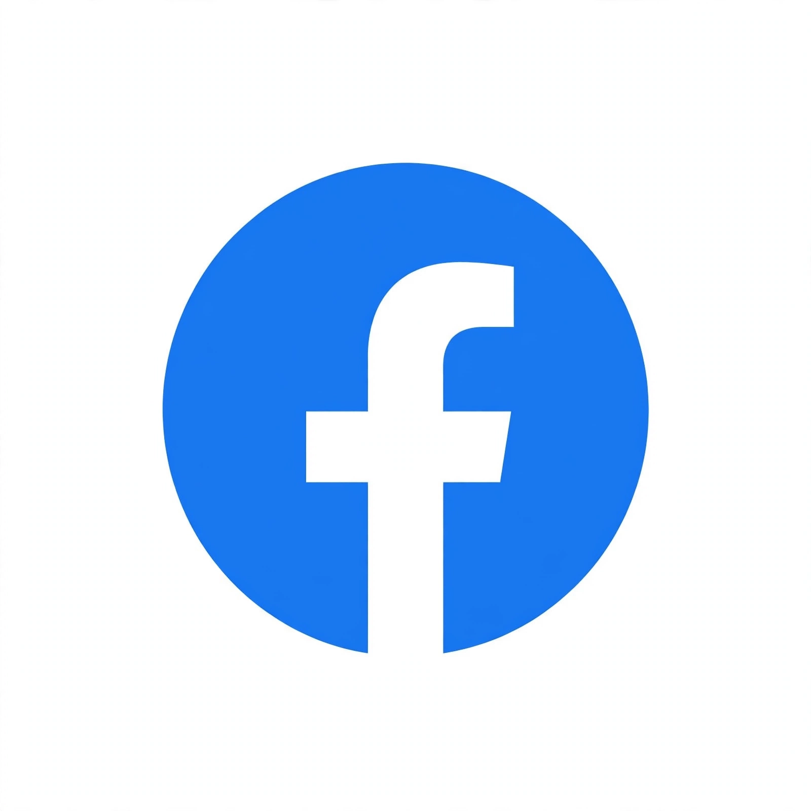

 | |
| Type of site | Social networking service |
| Available in | Many languages |
| Founded | February 4, 2004; Cambridge, Massachusetts, United States |
| Headquarters | Menlo Park, California, United States |
| Owner | Meta Platforms |
| Founder(s) | Mark Zuckerberg, Eduardo Saverin, Andrew McCollum, Dustin Moskovitz, Chris Hughes |
| URL | facebook.com |
| Registration | Required |
| Users | Around 3 billion monthly active users (from memory) |
| Launched | 2004 |
Facebook is an online social media and social networking service owned by the American technology company Meta Platforms. Founded in 2004 by Mark Zuckerberg with fellow Harvard College students, it grew from a campus-only directory into one of the world's largest social networks.
Members can post text, photos and video, add other users as friends, join groups, follow pages, use Marketplace, and send private messages through the linked Messenger service. Access is generally free, with the business supported mainly by advertising.
The service's homepage is recreated at facebook.com, including an invented logged-in feed view.
Contents
History
Facebook began as Facemash material and then 'TheFacebook' for Harvard students in February 2004, opening first to other universities, then high-school students, and in 2006 to anyone aged 13 or older with an email address.
Key early milestones remembered include the News Feed introduced in 2006, the Like button in 2009, the company's initial public offering in May 2012, and acquisitions including Instagram in 2012 and WhatsApp in 2014, discussed on the Instagram article.
Features
Core features include the profile and timeline, News Feed, friends list, pages for public figures and businesses, groups, events, Marketplace for local buying and selling, Watch for video, and live streaming.
Privacy and account settings have expanded over time in response to criticism, including controls over who can see posts and off-Facebook activity.
Reception and criticism
Facebook has been widely studied and criticised over privacy practices, notably the Cambridge Analytica data scandal revealed in 2018, as well as over misinformation, content moderation, effects on mental health, and its market power.
It has also been praised for reconnecting people, community fundraising and groups, and for its role in small-business advertising.
Related services
The parent company Meta also operates Instagram, WhatsApp and Threads. See the article on Google for another large internet platform of the same era.
See also
Links in the article body and infobox point to related articles and to the site's own homepage, recreated elsewhere in this web.
References
This article is a recreation from memory for the muse-webcrawl experiment. Factual statements are paraphrased; exact citations, page statistics and some dates are recorded as uncertain in the project ledger, not on this page.
External links
Official website — linked from this page to its recreated homepage in this web.